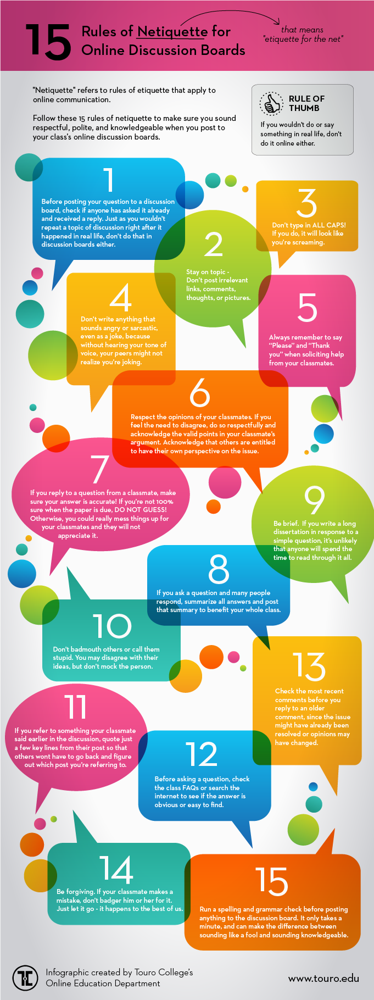

CS 475: Computer Networks
Ursinus College, Spring 2025
Instructor: Christopher J. Tralie
A 7 layer representation of the Open Systems Interconnection (OSI) model of computer networks. Picture courtesy of Wikimedia Commons
{kind=link}
A map of all of the web pages that are reachable from https://www.ursinus.edu with one or two clicks. Students will construct this graph from scratch in python in homework 1
For a while, the company MaxMind set the default location of the US to 38°N, 97°W. This caused many unknown IPs in the US to be supposed at a small farm in Kansas, leading to hell for its owners. This is but one of many examples of how our decisions as CS people can affect everyone, and not always in a positive way (Map picture courtesy of the Washington Post)
A subset of a zine about "every Linux networking tool I know" by Julia Evans, which you can view in its entirety at this link. We will use many of these commands in this class
A page from another zine by Julia Evans called "Networks! Ack!" (Click here to view it in its entirety). This part is about the TCP protocol, which students will implement in homework 4
Table Of Contents
Overview
Class Times / Locations
- Monday/Wednesday/Friday, 11:00 AM - 11:50AM Pfahler Hall, 106
Student Office Hours
-
Monday/Wednesday/Friday 3:30PM - 5PM, Pfahler Hall, 106
Prerequisites/Requirements
CS 274
Instructor
I grew up right around the corner in the Montgomery County and attended Upper Dublin High school (class of 2007). I then did my undergraduate degree in Electrical Engineering at Princeton University and my master's and Ph.D. degrees in Electrical And Computer Engineering at Duke University (heavily studying math and CS along the way). I finally started at Ursinus College in Fall of 2019! You can read more about my interests on my professional web site. Looking forward to getting to know everyone as we work through this course together!
Course Description
Somehow, humanity has pulled off an amazing engineering feat whereby it is possible to have video conversations and to play games with people on the other side of the world with 10s-100s of millisecond latency! To make this happen reliably and in a secure fashion, we need an incredibly complex system of interlocking communication protocols and algorithms. The Internet is the largest example of a so-called "computer network," or a system of computers/hardware devices that communicate with each other in a reliable way.
In this class, our primary focus will be on the engineering design of a system that reliably transmits information from one device to another. Specifically, we will explore a 5 layer version of the Open Systems Interconnection (OSI) model (where all of the application layers are wrapped into one layer). This model divides computer networks into various layers of abstraction, each with their own specific responsibilities, which is crucial for making such a complex system work. Students will gain hands on experience with each layer by coding up important protocols and algorithms in each layer. We will follow a "top-down" approach where we start off taking a lot of the nuts and bolts of routing and the network core for granted, but eventually students will understand how those layers work as well, even implementing parts of the TCP protocol and a router from scratch by themselves(!), using a software defined network platform known as mininet.
Regardless of whether students use this topic in their career or not, they will grow as programmers during the class, as this is likely the first time they'll put their systems programming to use at such a scale. I will also be slightly more hands off with some of my hints on assignments, instead having students read documentation and official specifications of various protocols.
Finally, since we don't have a dedicated cybersecurity course at Ursinus, and since this topic follows naturally after students have a nuts and bolts understanding of computer networks, this course will culminate in an informed discussion about various cybersecurity topics, which will ultimately be led by students.
Learning Goals
- Articulate the role and importance of abstraction in designing a complex system, and classify network functionality into the appropriate abstraction layer
- Identify tradeoffs between robustness and efficiency in a complex system
- Leverage expert knowledge about the network stack to inform cybersecurity discussions
Learning Objectives
- Refine C programming and debugging skills in the context of a complex system
- Practice reading documentation for a diverse set of APIs as you code
- Implement parts of some popular network protocols in the application layer (HTTP, SMTP, DNS, etc.).
- Implement lower levels of the stack; i.e. TCP in the transport layer and some parts of routing in the network layer
- Develop a working knowledge of some physical layer design strategies (e.g. FDMA)
Technology Logistics
We will be using a zoo of technologies in the course, as has become standard in 21st century work environments. Below is a table summarizing what kinds of communications/activities occur via each technology, and below that there are more details on everything. This is admittedly complex, and it will take some getting used to, but it will be worth it once we get it nailed down.
NOTE: I will repeat the same announcements across e-mail and Discord, so you don't have to check all both for announcements.
| Class web site (You are here!) |
|
| Canvas |
|
| Discord |
|
|
*: For privacy reasons, anything of a personal nature, and particularly things that have to with educational records (e.g. grades), need to be kept within Ursinus sanctioned platforms like Outlook e-mail.
Canvas
We will be using Canvas, but only to submit assignments and to store all of the grades. I will also keep all of the due dates current on the calendar there, as students have appreciated this common space for all of their classes in the past.
Discord / Anonymous Questions
To facilitate informal, class-wide discussions about the class, as well as buddy group coding with screen sharing, we will have a Discord channel for the class. My goal is for this to turn into a flourishing area to work through confusion and to share ideas as a group.
Voltaire Anonymous Questions
All questions are welcome! To help break down the barrier of asking questions, we will be using the chat bot Voltaire so students can ask questions anonymously. This has worked very well in the past. To use Voltaire, send a direct message to the Voltaire bot with the following syntax:
where channel_name is the name of the channel you want to post to, and message is the text you want to send. Below is an example:
Answer:
\[ u \cdot v = |u| |v| \cos(\theta) \]
In Class Anonymous Questions
In addition to Voltaire, I'll be running a bot during class that accepts questions to help quieter student who want to participate anonymously to do so. I've found this sort of thing to be particularly helpful with students from underrepresented groups. To ask a question during class, visit this link.
Readings
We'll be primarily be using two textbooks in the course, neither of which you need to purchase!
1. Kurose/Ross

The first book is Computer Networking: A Top-Down Approach by Jim Kurose and Keith Ross. Students can purchase this as a reference if they want, but it is not required to purchase this book. Instead, we will be going through online videos that Dr. Kurose has incredibly generously made available online at this link. Students will watch a selection of these videos and complete pre-class modules on them.
I love this book because, as the title suggests, it slowly peels back the layers of the network from the outside in, which I believe really helps students to create the proper scaffolding to understand the "why" before getting down to the lower layers
2. Peterson/Davie

I'll also link to parts of Computer Networks: A Systems Approach by Larry Peterson and Bruce Davie. This book goes in the reverse order through the network stack, so the readings may seem a bit scattered throughout the schedule, but students who don't want to purchase Kurose/Ross may find this helpful to refer to.
Other Texts
In the first half of the course, we'll be writing code in C. There's a fantastic book on systems programming that exclusively uses C that I'll refer to called Dive Into Systems by Suzanne J. Matthews, Tia Newhall, and Kevin C. Webb (the latter two are right down the road at Swarthmore!).
When we program sockets in C, we will also refer to the famous Beej's Guide To Network Programming by Brian "Beej Jorgensen" Hall. This is an awesome resource, and the author somehow manages to be even goofier and more sarcastic than I am.
Deliverables
Assignments
The bulk of the grade in the course will be earned by completing assignments. Some of them are larger than others, so it may seem like I'm giving out more assignment than in some of my other classes, but the workload will be similar overall. To help you manage your time, I'll split the larger ones into smaller components. Be sure to start them early! Note that collaboration and sharing rules differ slightly between the individual assignments and the large assignments.
Programming Languages
Most of the assignments will be completed in C. This will be a nice followup from CS 174, and it will allow us to interact more directly with system calls than higher level languages. The input/output is also much more direct/straightforward than it is in other languages (including C++).
On some occasions, though, assignments will be in python, particularly when we want to do higher level data analysis, plotting, etc.
Debugging Principles
If you're taking this course, then you've certainly had experience with debugging, but it is a skill you will still need to work on, so you should expect to hit some roadblocks. In fact, it is time consuming and difficult even for very experienced programmers. So do not be hard on yourself if your programs don't work the first time around (they rarely do, even if you've been programming for decades!).
I have had over 20 years of programming experience at this point, and I have learned the hard way what works and what doesn't. Here are my main debugging principles in a nutshell
- Leave yourself adequate time to work on the assignments, because the amount of time it takes to resolve issues can be unpredictable.
- Write small bits of code and test them right away. Don't write a wall of code and test it, only to find out that something doesn't work. By contrast, if you write bits at a time, you will know right away what code you wrote caused things to be wrong.
- Apply the scientific method: have in mind hypothesis for what might be wrong, design a quick experiment to test your hypothesis, draw conclusions, and repeat.
- Fail quickly. If you're working on a larger scale program that processes a lot of data, do not wait for several minutes for data to load every time you make a small change. Instead, come up with the minimum, simplest experiment you possibly can which will tell you whether your code is correct or not.
- Don't forget that you can write code to help you automate debugging. Otherwise, it's sometimes tedious to repeat the same steps over and over again as you're changing things.
- Know when to walk away. We often get stuck in loops wanting to resolve things, but then our logical thinking goes out the window and we start randomly trying different things. Even if you're up against the clock, it is often good to take a little break and come back again a little bit later.
Schedule
Outlined below is the schedule for the course, including lecture topics and assignment due dates. All assignments are due at 11:59PM on the date specified. The specific dates of different topics are subject to change based on the pace at which we go through the course.
Finally, unless otherwise specified, all of the assignments are in C.
| Lecture | Date | Lectures (click for notes) | Readings/Links | Assignments/Deliverables |
The Application Layer | ||||
| 1 | Wed 1/22/2025 | Intro To Networks, Layering/Encapsulation | HW0: Software Test / Wireshark / Mininet Intro Out | |
| 2 | Fri 1/24/2025 | IP Addresses And Ports, Cat/Netcat | Module 1 - Intro To Networks And The Network Stack (Kurose/Ross 1.1, 1.2, 1.5) Due Before Class HW1: "Bear Crawl" Web Crawler (Python) Out Syllabus Quiz Due | |
| 3 | Mon 1/27/2025 | The packet concept, wireshark intro, firewalls, traceroute | Module 2 - Network Core And Performance (Kurose/Ross 1.3, 1.4) Due | |
| 4 | Wed 1/29/2025 | File descriptors, sprintf, sscanf | C Programming, Pointers Review Module Due Before Class
HW0: Software Setup Due | |
| 5 | Fri 1/31/2025 | structs in C, Socket programming in C | C Structs, File Descriptors, And Sockets Module (Kurose/Ross 2.7) Due Before Class | |
| 6 | Mon 2/3/2025 | The HTTP Protocol | HW2: HTTP Web Get Out
C Sockets Part 1 Module Due | |
| 7 | Wed 2/5/2025 | Continue Socket Programming in C | ||
| 8 | Fri 2/7/2025 | Designing Application Layer Protocols
| HW1 Due | |
| 9 | Mon 2/10/2025 | Multithreaded Socket Programming
| ||
| 10 | Wed 2/12/2025 | Multiprocess Socket Programming, Web Proxy / CDN Concept
| ||
| 11 | Fri 2/14/2025 | SMTP And Email Protocols | ||
| Sun 2/16/2025 | Module 8 Due | |||
| 12 | Mon 2/17/2025 | The Domain Name System (DNS) | HW2 Due | |
The Transport Layer | ||||
| 13 | Wed 2/19/2025 | Transport Protocols, UDP / Multiplexing | Module 6: SMTP and and Module 7: DNS Due Before Class
HW3: Web Proxy / Web Cache Out | |
| 14 | Fri 2/21/2025 | Begin Reliable Transport Algorithms | ||
| 15 | Mon 2/24/2025 | Continue Reliable Transport Algorithms | ||
| 16 | Wed 2/26/2025 | Reliable Transport: TCP | ||
| 17 | Fri 2/28/2025 | Continue TCP, Principles of Congestion Control | HW3 Submission 1 | |
| 18 | Mon 3/3/2025 | TCP Congestion Control, And Wireshark Examination Thereof | ||
The Network Layer | ||||
| 19 | Wed 3/5/2025 | The Network Layer and IPv4 | Intro To The Network Layer (Kurose/Ross 4.1, 4.2 part 1) Due Before Class | |
| 20 | Fri 3/7/2025 | IPv4 Addressing And Subnets | Kurose/Ross 4.2 part 2, 4.3 part 1 Due Before Class
HW3 Submission 2 HW4: TCP Receiver Out | |
| -- | Mon 3/10/2025 | Spring Break | No CS 372 Class. Enjoy the break! | |
| -- | Wed 3/12/2025 | Spring Break | No CS 372 Class. Enjoy the break! | |
| -- | Fri 3/14/2025 | Spring Break | No CS 372 Class. Enjoy the break! | |
| 21 | Mon 3/17/2025 | IP with wireshark | Kurose/Ross 4.3 part 2 Due Before Class | |
| 22 | Wed 3/19/2025 | IP Multiplexing with Network Address Translation (NAT) | Kurose/Ross 5.6 (ICMP) Due Before Class | |
| 23 | Fri 3/21/2025 | Intermezzo: Raw Sockets, ICMP | HW4 Part 1 Due | |
| 24 | Mon 3/24/2025 | IPv6 | ||
| 25 | Wed 3/26/2025 | Introduction To Routing, Link State Algorithms | ||
| 26 | Fri 3/28/2025 | Continue Link State Algorithms | HW4 Part 2 Due
HW5: Mini Router Out | |
| 27 | Mon 3/31/2025 | Distance Vector Algorithms | ||
| 28 | Wed 4/2/2025 | Routing at Scale: Border Gateway Protocol (BGP) | ||
The Link Layer | ||||
| 29 | Fri 4/4/2025 | Introduction To The Link Layer, Parity Checks | HW5 Part 1 Due | |
| 30 | Mon 4/7/2025 | Checksums, Cyclic Redundancy Checks (CRC) | ||
| 31 | Wed 4/9/2025 | Switching, Ethernet Protocol | ||
| 32 | Fri 4/11/2025 | Address Resolution Protocol (ARP), And Security Vulnerabilities Therein | ||
| 33 | Mon 4/14/2025 | Neighbor Discovery Protocol (NDP) | ||
The Physical Layer | ||||
| 34 | Wed 4/16/2025 | Time Division Multiple Access (TDMA) | HW5 Part 2 Due
HW6: Beeps And Boops: The Audio Physical Layer (Python) Out | |
| 35 | Fri 4/18/2025 | Aloha Protocol | ||
| 36 | Mon 4/21/2025 | Frequency Division Multiple Access (FDMA) | ||
Cybersecurity | ||||
| -- | Wed 4/23/2025 | COSA Day | No CS 372 Class. Enjoy the break! | |
| 37 | Fri 4/25/2025 | Basics of encryption | HW6 Due
HW7: Student Cybersecurity Presentations (NO DROP) Out | |
| 38 | Mon 4/28/2025 | Public key encryption algorithms, RSA | ||
| 39 | Wed 4/30/2025 | VPNs And Tunneling | ||
| 40 | Fri 5/2/2025 | Student Presentations:
| ||
| 41 | Mon 5/5/2025 | Student Presentations:
| ||
| 42 | Wed 5/7/2025 | Student Presentations:
| ||
Grading
Breakdown
| Class Engagement / Pre-Class Modules | 20% |
| Programming Assignments | 70% |
| Comprehensive Final Exam | 10% |
Deadlines Policy
I have been very flexible in the past, but I have observed that this is usually to the detriment of students who let certain assignments drag on well past the deadlines and fail to move onto subsequent assignments, ultimately failing the course or getting artificially low grades that do not reflect their abilities. Moving forward, I would like to prevent this, and I would like all students to learn how to triage and submit "good enough" work on individul assignments so they can keep moving, and to practice valuable accountability skills that will benefit them in future endeavors past Ursinus. At the same time, I recognize that many things happen outside of the classroom that are beyond your control; life is inherently difficult and unpredictable, particularly for those who come from different backgrounds and who have responsiblities beyond the classroom. Therefore, I am building an oxymoronic "rigid flexibility" structure into the course, without exceptions outside of official accommodations. The rules are as follows:
-
All programming assignments are due at 11:59PM EST on the date(s) stated on the schedule
-
You have 5 free late days to use on programming assignments throughout the semester. These will go down to the decimal point if you submit minutes or hours after a deadline, so students don't have to fret about submitting at, e.g., 12:05 AM. You will get extra credit for any days you do not use, but no work will be accepted once the lateness days are used up
-
To help you adjust to the above policy, I will drop the lowest score on a mini-deadline in the assignments category by the end of the semester. For instance, if homework X has 3 mini deadlines and you miss the third deadline and get a 0, but you hand in both other parts and all parts of all other assignments on time, then I will ignore the third deadline on homework X.
-
Labs will not be accepted late because the timing has been planned very carefully to set you up for class and for subsequent assignments, but I will drop the lowest lab score at the end of the semester to help you adjust to this new policy.
-
Pre-class content modules that are submitted after class will get half credit.
To reiterate, you will find lots of flexiblity built into these policies, but they are designed to prevent you from getting too stuck on an individual assignment, and also to incentivize people to come prepared for lively class discussions. I hope we will all have more positive experiences moving forward with this.
Letter Grades
Letter grades will be assigned on the scale below at the end of the course.
|
|
|
|
|
Classroom Environment
Inclusive Environment
Computer science is a field that has historically been and continues to be steeped in inequalities. Mindful of this, my goal in class is to foster a environment in which students across all axes of diversity feel welcome and valued, both by me and by their peers. Axes of diversity include, but are not limited to, age, background, beliefs, race, ethnicity, gender/gender identity/gender expression (feel free to tell me in person or over e-mail which pronouns I should use), national origin, religious affiliation, and sexual orientation. Discrimination of any form will not be tolerated.
A slightly more subtle thing that we want to watch out for in class is not to assume anything about others based on implicit biases. I have heard from quieter students at Ursinus from different backgrounds in the past that they sometimes feel their contributions aren't valued from their group members and that they're talked over during collaborations. So be mindful of this and be sure to curb this behavior in yourself if you notice it...this is something immediate you can to do help stem the leaky pipeline in our field.
.Furthermore, I want all students to feel comfortable expressing their opinions or confusion at any point in the course, as long as they do so respectfully. As I will stress over and over, being confused is an important part of the process of learning computer science. Learning computer science and struggling to grow is not always comfortable, but I want it to feel safe. In other words, I will regularly keep you at the boundary of your comfort zone with challenging, real-world assignments, but I want you to feel comfortable with me and your peers and respected as a learner during the process.
{kind=link}
Finally, I am aware that, particularly during the pandemic, there are a variety of factors that may make it difficult to perform at your best level in class. At Ursinus, we are fortunate to have quite a mix of students from different backgrounds, many of whom need to work part time, and an increasing number of whom are commuters and have family obligations. If you find yourself having difficulty performing at the level that you want and/or turning assignments in on time because of any of these issues, communicate with me, and we can come up with a solution together (I will gently reach out if I notice any slips even if you don't communicate). This is an exciting capstone course, and I want to work to keep your excitement alive, regardless of your personal circumstances. We will get you through the course as long as the lines of communication are open and we work together. You belong in CS!
Participation
Classroom Attendance And Etiquette
Students are expected to attend class in person. We're shooting for engagement over mere attendance; students are expected to be active in class exercises and to be fully invested in the class (i.e. no internet browsing). Students who are unable to attend class for significant reasons (whether isolation or quarantine for students who have received a positive test, those experiencing Covid-related symptoms while awaiting test results, or other issues that make it difficult to attend class) should work pro-actively to make up any class exercises that they missed. To help with this, I will do my best to put up Youtube videos from other instructors on topics that we cover.
Finally, students are expected to follow any college policy requiring mask wearing on campus, in addition to following any guidance faculty provide for their individual classes.Masks should be available in every academic building, if needed.
Maximizing Your Communal Experience
Here are ways students can maximize their experience as a class community, and which could lead to extra credit in certain situations.
- Helping to teach a student a topic during office hours.
- Certain calls for participation in class
- Particularly helpful or insightful messages on Discord
- Finding mistakes in the book or on the assigned homework
Discord Communication Policy
Since this is a class-wide communication, the following rules apply to online communication- Students are expected to be respectful and mindful of the classroom environment and inclusivity standards. They are equally applicable to a virtual environment as they are in class.
- Students are not permitted to publicly share direct answers or questions which might completely give away answers to any homework problems. When in doubt, send me a direct message on Discord.
- I will attempt to answer questions real time during my student office hours. Otherwise, I will make every attempt to respond within 24 hours on weekdays. I cannot be expected to respond at all on Saturdays or Sundays or outside of 10AM-8PM on weekdays, so plan accordingly. (Of course, students can and should still respond to each other outside of these intervals, when appropriate).
The points above are part of a more general term referred to as "netiquette." Refer to the chart below, provided by Touro College
Collaboration Policy
Overall Philosophy
The collaboration policy for this class walks the line between encouraging openness and collaboration during a challenging learning process, while also making sure that each students is progressing technically at an individual level without relying on 100% on other classmates. Communication between students is allowed (and encouraged!) on most assignments, but it is expected that every student's code or writeups will be completely distinct. General rules are as follows:
-
Do not copy code off of the Internet
-
Use of ChatGPT or other large language models is not permitted in this class. Later in your career once you've mastered the fundamentals we're covering, it's more appropriate to use it as a co-pilot. But you have to learn how to do it on your own first. Furthermore, since these models are optimized to sound convincing rather than to output correct information, it's quite likely that they will introduce bugs into code that they generate. So it's likely it will be easier to write your code from scratch anyway.
Finally, even for more basic questions about syntax, etc, I don't want you to use ChatGPT; rather, I'd like you to share these questions with the class on discord (anonymously, if you'd like) so that others can see what common points of confusion are.
-
Please do cite any sources in addition to materials linked from the course website that you used to help in crafting your code and completing the assignment
Assignment Buddies
To encourage collaboration, students will be allowed (not required) to choose one or more "buddies" to work "near" during assignments. Students are still expected to submit their own solutions, but they are allowed to provide substantial help to each other, and even to look at each others' code during the process. Students should indicate their buddies in the README upon assignment submission. Let me know if you would like a buddy but are having trouble finding one.
Individual Assignments
There will be a few assignments that students are expected to complete on their own with no communication with anyone but me. They will be limited in number, but this will be just to make sure every individual students is progressing technically. You can think of them like an open-ended, open-book take-home quiz where you can ask me questions.
Collaboration Scenarios Table
Below is a table spelling out in more detail when and how you are allowed to share code with people (table style cribbed from Princeton CS 126).
Click on each button below to view the collaboration parameters for each scenario. Labs are more permissive than assignments, which are more permissive than individual tasks
Lab Collaboration Grid
| YOUR BUDDY |
COURSE STAFF |
CS 271/371 GRADS |
CLASS- MATES |
OTHER PEOPLE |
|
|---|---|---|---|---|---|
| DISCUSS CONCEPTS WITH: | ✔ | ✔ | ✔ | ✔ | ✔ |
| ACKNOWLEDGE COLLABORATION WITH: | ✔ | ✔ | ✔ | ✔ | ✔ |
| EXPOSE YOUR CODE/SOLUTIONS TO: | ✔ | ✔ | ✔ | ✔ | ✘ |
| VIEW THE CODE/SOLUTIONS OF: | ✔ | * | ✘ | ✔ | ✘ |
| COPY CODE/SOLUTIONS FROM: | ✘ | * | ✘ | ✘ | ✘ |
Assignment Collaboration Grid
| YOUR BUDDY |
COURSE STAFF |
CS 271/371 GRADS |
CLASS- MATES |
OTHER PEOPLE |
|
|---|---|---|---|---|---|
| DISCUSS CONCEPTS WITH: | ✔ | ✔ | ✔ | ✔ | ✔ |
| ACKNOWLEDGE COLLABORATION WITH: | ✔ | ✔ | ✔ | ✔ | ✔ |
| EXPOSE YOUR CODE/SOLUTIONS TO: | ✔ | ✔ | ✔ | ✘ | ✘ |
| VIEW THE CODE/SOLUTIONS OF: | ✔ | * | ✘ | ✘ | ✘ |
| COPY CODE/SOLUTIONS FROM: | ✘ | * | ✘ | ✘ | ✘ |
Individual Collaboration Grid
| YOUR BUDDY |
COURSE STAFF |
CS 271/371 GRADS |
CLASS- MATES |
OTHER PEOPLE |
|
|---|---|---|---|---|---|
| DISCUSS CONCEPTS WITH: | N/A | ✔ | ✘ | ✘ | ✘ |
| ACKNOWLEDGE COLLABORATION WITH: | N/A | ✔ | ✘ | ✘ | ✘ |
| EXPOSE YOUR CODE/SOLUTIONS TO: | N/A | ✔ | ✘ | ✘ | ✘ |
| VIEW THE CODE/SOLUTIONS OF: | N/A | * | ✘ | ✘ | ✘ |
| COPY CODE/SOLUTIONS FROM: | N/A | * | ✘ | ✘ | ✘ |
* You may view and copy code from class exercises and class resources without citing them, but you should not copy solutions from previous semesters that the instructor may have provided
NOTE: The terms "exposing" and "viewing" exclude sending or ingesting electronically, which would be considered copying. Exposing and viewing are normally done in the context of in-person working or in the help room. When students work remotely, what this means is that buddies can screen share as they are working through things, but they should not send code directly.
NOTE ALSO: "Other people" includes internet sources.
If the collaboration policy has been violated in any way, regardless of intent, then it may be an academic dishonesty case, and it will be referred to the Associate Dean for Academic Affairs. I am required to make this report in every occurrence, so it is best to speak with me first if there are any questions about the policy or expectations. You should feel free to have these conversations with me anytime prior to making your submission without fear of penalty.
On a more personal note, though a willful violation of academic honesty may seem merely transactional to a student, faculty take violations very personally, as they are disrespectful to the time and effort we put into our courses. I would also like to emphasize that your reputation is much more important than your grades. The recommendations we as faculty write go a long way, and we are much happier to write positive recommendations for students with lower grades who show grit and growth than we are to write recommendations for students with higher grades who have cheated.
Other Resources / Policies
Accommodations
In addition to our general awareness diversity, Ursinus College is also committed to providing reasonable accommodations to students with disabilities. Students with a disability should contact the Directory of Disability Services ASAP at disabilityservices@ursinus.edu. They are located in Lower Wismer. Visit this link for more information on the process. I will do my best to accommodate your requests, and they will be kept completely confidential.
One on One Tutoring
One on one tutoring for up to two hours per week is available through the institute for student success. Click here to fill out a Qualtrics survey if you'd like to take advantage of this.
Let's Talk
Mental health care is increasingly recognized as a crucial service for the undergraduate population. Visit this link for more information about complementary counseling services provided by the college. The Wellness Center has a virtual drop-in crisis hour at 2-3 pm each weekday, which is available for students in crisis who need to be seen immediately by a clinician. If you are still hesitant to go, take me (Professor Tralie) as an example of someone who has benefited greatly from talk therapy and medication in the past. I am happy to discuss this in student office hours in more detail.
Beyond that, please have a look at this document for a variety of resources related to mental health at Ursinus.
Finally, be aware that there are resources outside of mental health care proper to address some core sources of mental stress and strain, such as time management and writing at the Institute for Student Success and the Center for Writing And Speaking.
Title IX
Title IX is a federal law, under which it is prohibited to discriminate on the basis of gender. The Title IX Coordinator is available to receive inquiries and to investigate allegations in this regard.
Inclement Weather Policy (aka COVID Policy)
In the event that the College closes due to inclement weather or other circumstances (such as a COVID lockdown), our in-person class sessions, drop-in student office hours, or other meetings will not be held. I will contact you regarding our plan with regard to rescheduling the class or the material, any assignments that are outstanding, and how we can move forward with the material (for example, any readings or remote discussions that we can apply). If necessary, I may schedule online virtual sessions in lieu of class sessions, and will contact you with information about how to participate in those. I will communicate this plan to the department so that it can be posted on my office door if it is feasible to do so. This policy and procedure will also apply in the event that the College remains open but travel conditions are hazardous or not otherwise conducive to holding class as normal. Should another exigent circumstance arise (for example, illness), I will follow this policy and procedure as well.